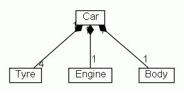

Last change: Tuesday, September 8, 2009 8:56 am
Last change: Tuesday, September 8, 2009 8:56 am
Unless otherwise expressly stated, all original material on this page created by Diomidis Spinellis is licensed under a Creative Commons Attribution-Share Alike 3.0 Greece License.
@opt shape tag)
@stereotype name tag)
@tagvalue name value tag)
implements declaration)
extends declaration or (for multiple inheritance) the javadoc @extends tag)
@assoc tag)
@navassoc tag)
@has tag)
@composed tag)
@depend tag)
@extends take four arguments:
class Tyre {}
class Engine {}
class Body {}
/**
* @composed 1 - 4 Tyre
* @composed 1 - 1 Engine
* @composed 1 - 1 Body
*/
class Car {}
|  |
| Contents | « Previous Next (Notes in Class Diagrams) » |
Last change: Tuesday, September 8, 2009 8:56 am
Unless otherwise expressly stated, all original material on this page
created by Diomidis Spinellis is licensed under a
Creative Commons Attribution-Share Alike 3.0 Greece License.